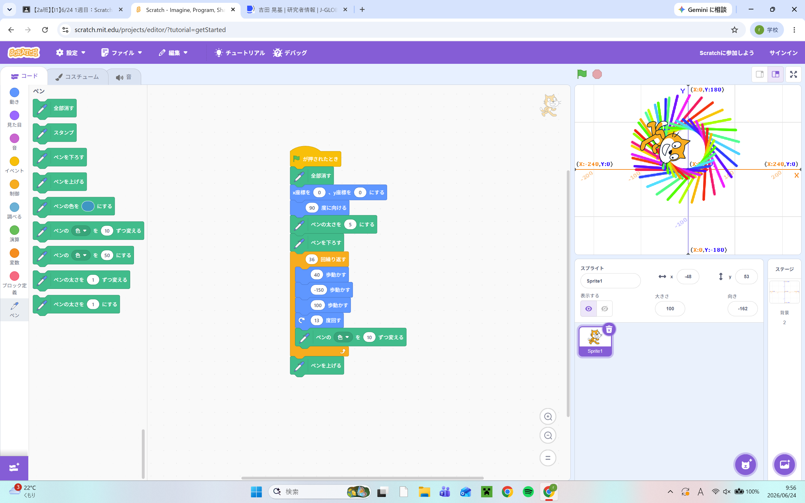
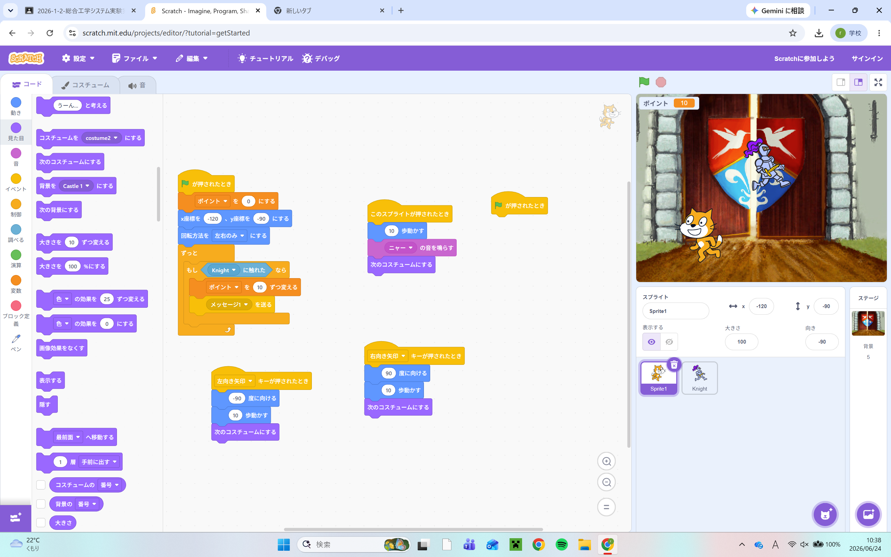

1週目のレポート ： 公大高専１年実習I-1
2a班19番 わいだりい
第1週目
1-1 サイエンスアート

1.内容
今回はスクラッチを用いたサイエンスアートの作成を行った。
その工程の中で、スクラッチでの基本的なプログラムの仕方や拡張機能の使い方を学んだ。
2.感想
プログラムを少しいじるだけで全然違うものになるというのが面白かった。
このような特徴がゲームやwebサイトのバグを引き起こすんだなと思った。こういう小さいミスを見つける作業をAIがやってくれるとなると私たちにとっては良い効果も悪い効果ももたらしそうだなと感じた。
1-2 ゲーム

1.内容
ここではスクラッチでリンゴなどの物体を上から降らせてキャッチするゲームを作った。
そこで少し応用的なプログラムを学んだ。
2.感想
実際にプログラムを組んで、ものを制御するのが非常に面白かった。自分でゲームを作ることにずっと興味があったから、こういう体験版的なものをしてから本格的なことをやっていきたいなと思った。
1-3 ホームページ作成
私のホームページ
1.内容
githubを使って自分の自己紹介のためのホームページを作成した。
また、そのホームページの内容を編集し、その内容をクラスメイトと個人的に共有したりした。
2.感想
僕たちが普段から見ているホームページはこのようなものを基盤として、作っているんだなと思った。
また、実際の企業のホームページはアニメーションが豊富であったり、色の使い方が工夫されているため、ホームページを作るためにはいろいろな技術が必要なんだなと感じた。
各ページへのリンク
1週目のレポート
2週目のレポート
3週目のレポート
私のホームページ